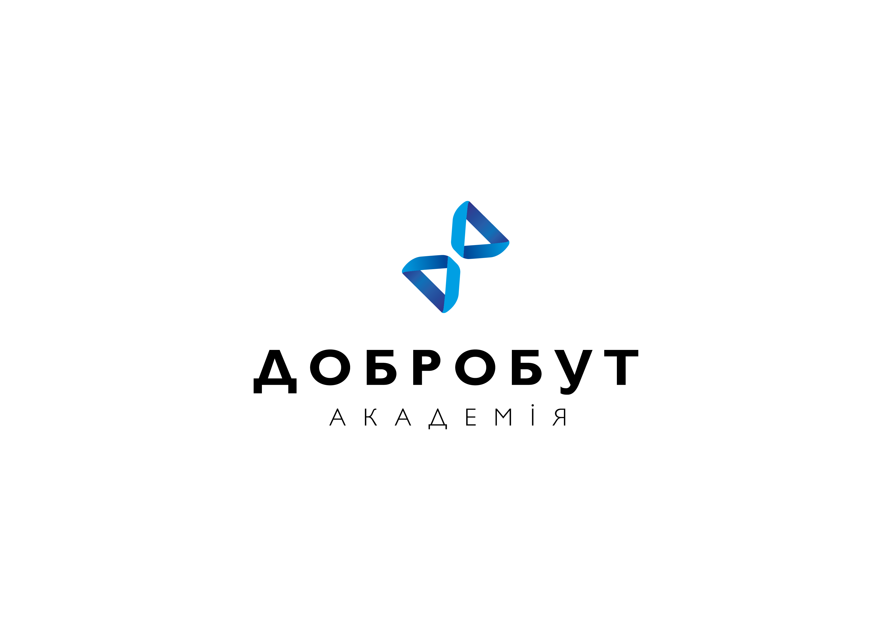
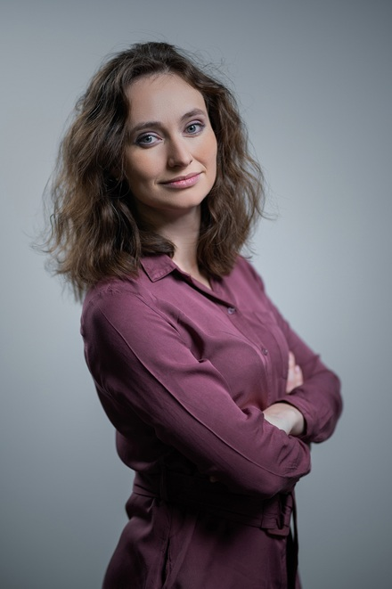
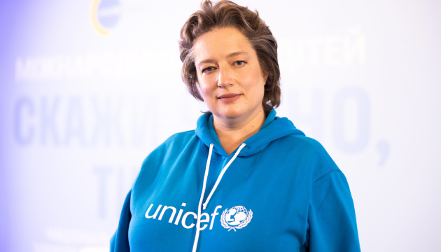
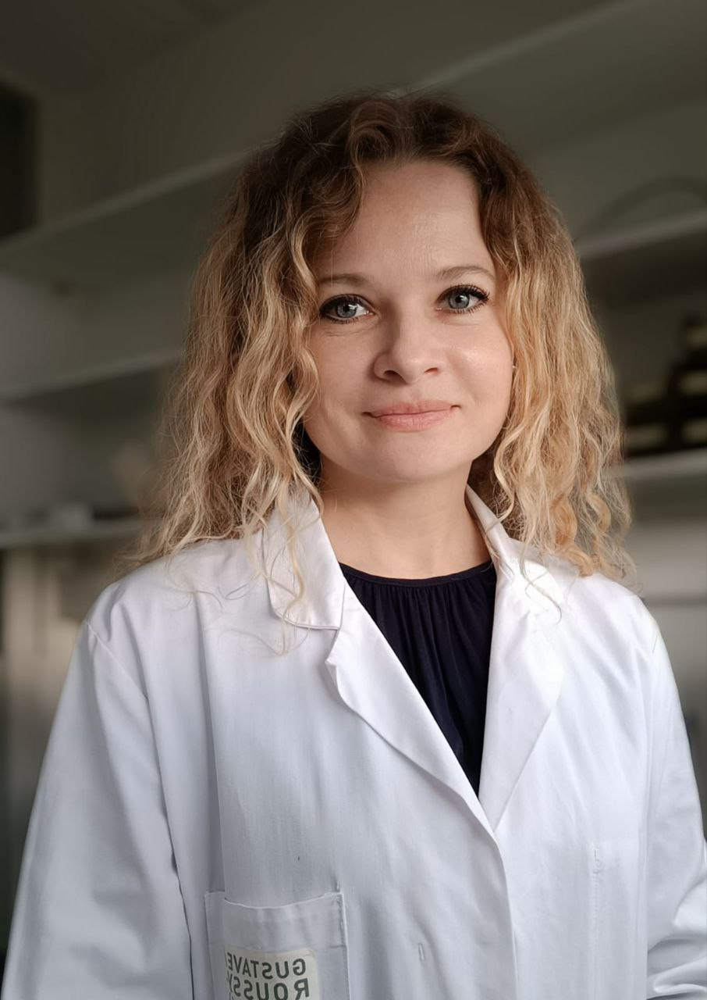
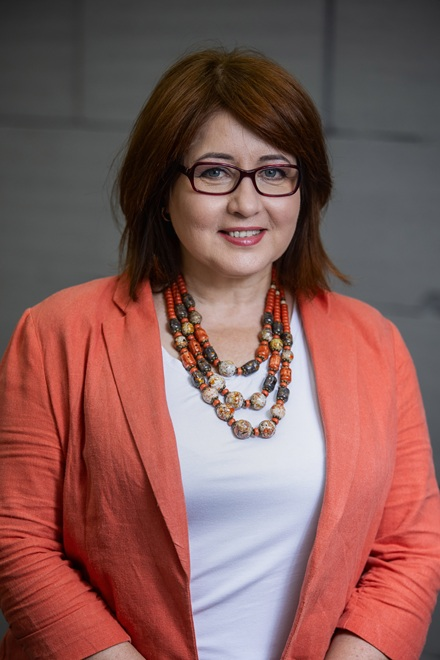
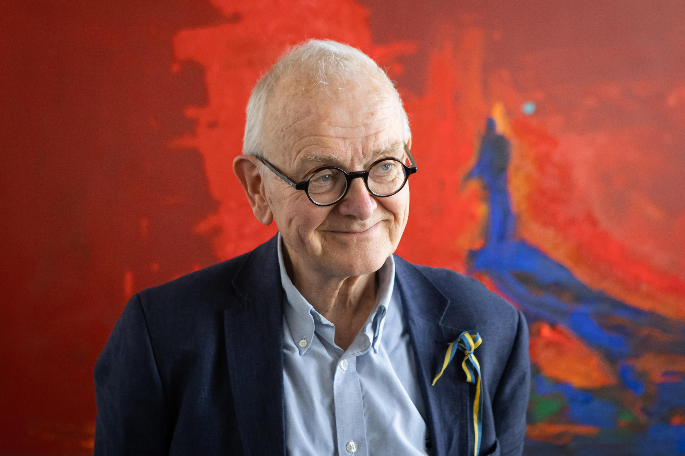
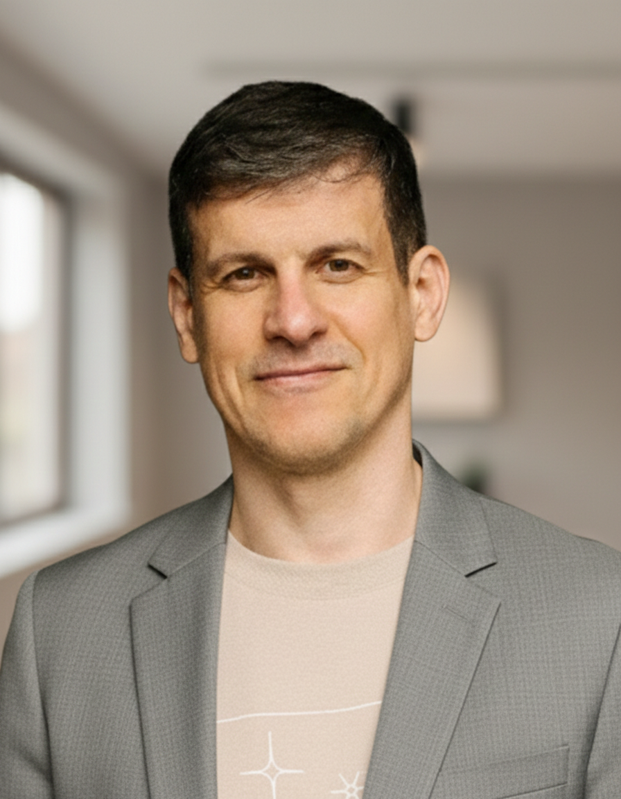
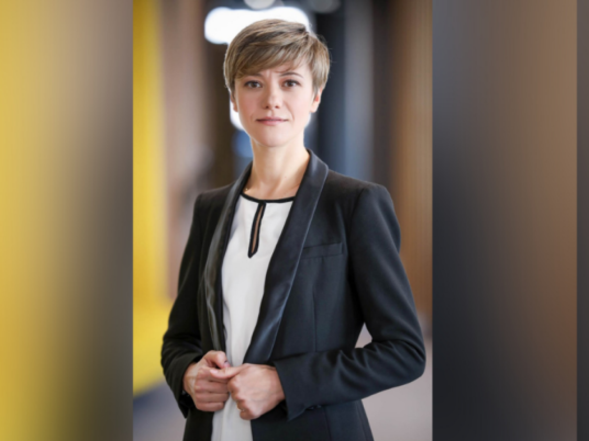

Отримайте сучасну магістерську освіту у сфері громадського здоров'я та працюйте як менеджери та управлінці у приватних, державних та міжнародних організаціях, які формують політики громадського здоров’я для цілих спільнот і країни.

які визначають розвиток сфери громадського здоров'я
завдяки формату, адаптованому для працюючих фахівців
що відповідає міжнародним стандартам і реальним викликам системи охорони здоров'я.
провідних лікарів, менеджерів та експертів медичної мережі «Добробут»
Отримають сучасні інструменти управління системою охорони здоров'я, навчаться приймати рішення на основі даних, ефективно розвивати медичні організації та впроваджувати зміни.
Розвинуть управлінські та лідерські компетенції, зрозуміють, як працює система охорони здоров'я на різних рівнях, і підготуються до нових кар'єрних можливостей.
Поглиблять знання в епідеміології, аналізі даних і розробці політик громадського здоров'я, щоб реалізовувати масштабні проєкти та зростати професійно.
Навчаться розробляти, впроваджувати та оцінювати рішення у сфері громадського здоров'я, ефективніше управляти змінами та працювати з доказовими даними при формуванні політик.
Навчитеся працювати з медичними даними: збирати, аналізувати та інтерпретувати їх, використовувати інструменти біостатистики, працювати з eHealth і перетворювати великі масиви інформації на обґрунтовані управлінські рішення.
Зрозумієте, як працюють сучасні системи охорони здоров'я та як вони змінюються. Навчитеся розробляти політики й стратегії розвитку, взаємодіяти з державою та громадами, а також будувати ефективну мережу медичних послуг.
Опануєте економіку медичної галузі: навчитеся аналізувати фінансові моделі, планувати бюджети, розраховувати тарифи, оптимізувати витрати та приймати управлінські рішення на основі даних.
Отримаєте системне розуміння сучасних інфекційних загроз, принципів епідеміологічного нагляду, профілактики та реагування на спалахи інфекційних захворювань.
Навчитеся керувати командами та змінами, планувати й реалізовувати проєкти, залучати фінансування та будувати комунікацію, яка формує довіру й змінює поведінку людей.
Опануєте підходи до оцінки ризиків для здоров'я населення, планування реагування на епідемії, біологічні, екологічні та техногенні загрози, а також управління системою охорони здоров'я під час кризових ситуацій.
Розберетеся в етичних і правових засадах громадського здоров'я, медичному законодавстві та принципах формування освітніх політик. Навчитеся приймати рішення, що відповідають міжнародним стандартам і потребам суспільства.
Вивчите сучасні підходи до організації екстреної допомоги, управління маршрутом пацієнта, взаємодії служб та впровадження систем контролю якості й безпеки на догоспітальному та госпітальному етапах.
Дізнаєтеся, як працюють сучасні системи підтримки психічного здоров'я, опануєте методи раннього виявлення психічних розладів на рівні громади та зрозумієте, як когнітивні особливості й стрес впливають на поведінку людей та прийняття рішень.
Навчитеся писати наукові статті, грантові заявки та дослідницькі проєкти англійською мовою, презентувати результати власних досліджень і критично аналізувати міжнародну наукову літературу.
Навчитеся аналізувати демографічні тенденції, розробляти програми профілактики, сексуальної освіти та планування сім'ї, а також адаптувати міжнародні практики до потреб українських громад.
Закріпите отримані знання під час практики в медичних установах, державних чи міжнародних організаціях або профільних проєктах. Завершальним етапом стане власне прикладне дослідження або стратегічний проєкт, який ви захистите як кваліфікаційну роботу.
На програмі викладатимуть кращі викладачі, гостьові спікери та експерти-практики, зокрема:

заступниця міністра охорони здоров’я (2019), радниця в.о. міністра охорони здоров’я (2016-2019)

лікарка-інфекціоніст, медична експертка Дитячого фонду ООН (ЮНІСЕФ)

кандидатка біологічних наук, біохімікиня-аналітикиня, консультантка з РХП, медична наукова співробітниця Венеціанського інституту молекулярної медицини, онкологічного центру Гюстав Русі та Університету Париж Сакле.

докторка біологічних наук, нейробіологиня, професорка, ректорка Академії Добробут.
доцентка кафедри загальної медицини Академії Добробут, педіатриня, інфекціоністка, сімейна лікарка медичної мережі «Добробут».

британський нейрохірург, піонер нейрохірургічної допомоги для України, почесний професор Академії Добробут.

нейробіолог, співзасновник лабораторії нейромаркетингових досліджень Beehiveor Academy and R&D Labs, а також платформи ментального добробуту Anima.ua, доцент кафедри анестезіології та інтенсивної терапії Академії Добробут.
анестезіологиня, завідувачка кафедри анестезіології та інтенсивної терапії Академії Добробут.

HR-директорка медичної мережі «Добробут».
Якщо хочете дізнатися більше про програму та умови вступу, будь ласка, тисніть на кнопку «Отримати консультацію». Наші менеджери зв'яжуться з вами, щоби відповісти на всі питання.